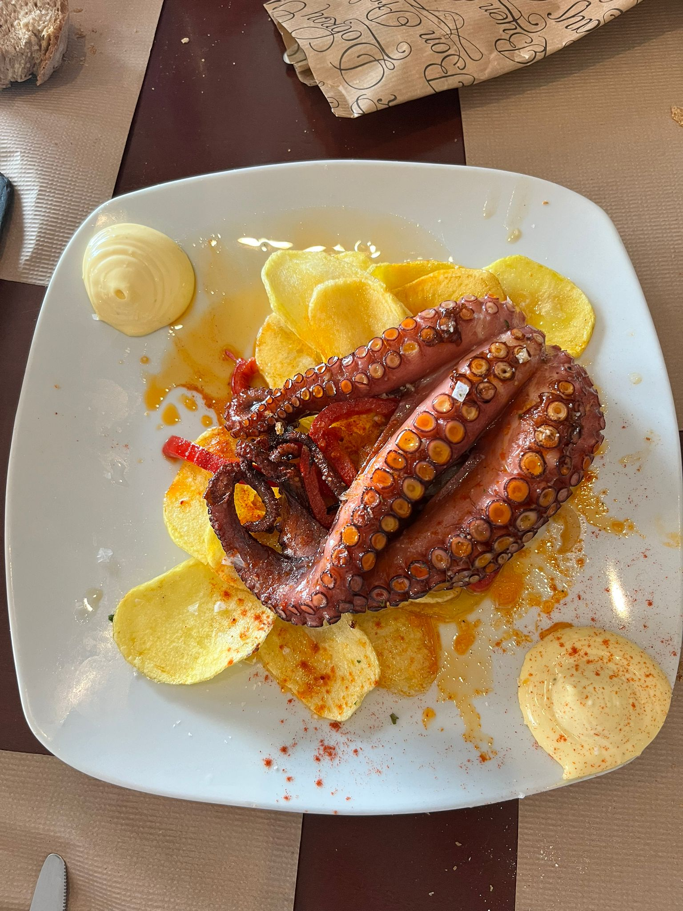
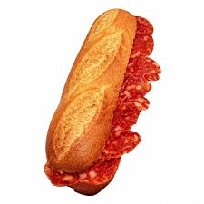
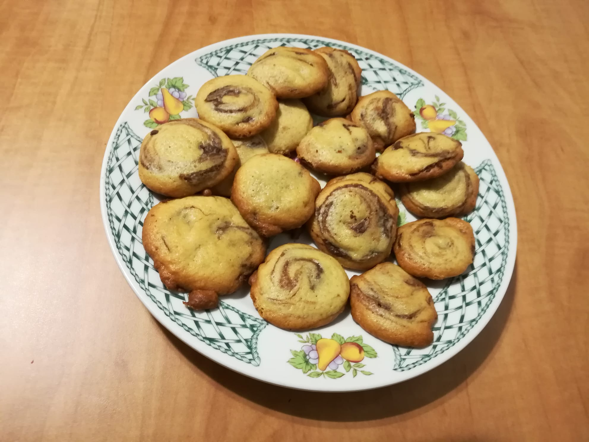

Recetas Ilustradas
Explora algunas de nuestras recetas más queridas y aprende a prepararlas en casa con nuestras guías paso a paso.
Pulpo a la Gallega
Un plato gallego clásico con pulpo cocido, rociado con aceite de oliva, sal gruesa y pimentón sobre una base de patatas.
Bocadillo de Chorizo
Una deliciosa combinación de chorizo asado en pan crujiente, ideal para un bocado rápido y lleno de sabor.
Pastitas de Té
Pequeños bocados dulces y crujientes, perfectos para acompañar una taza de té o café en la sobremesa.